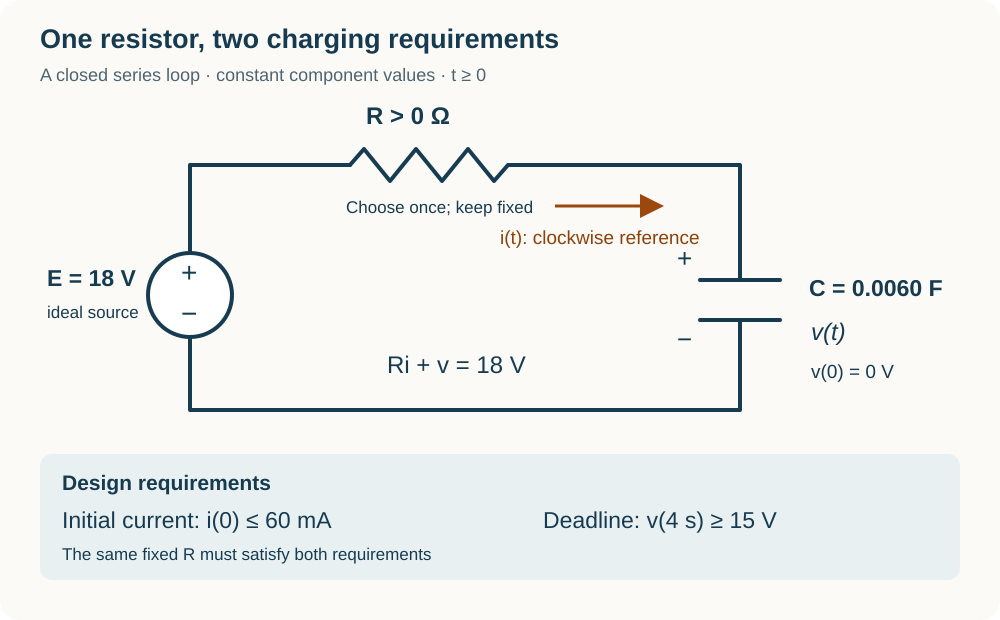

Course practice / Batch 16 / 2026-10-12 PDT
MTH 256
一阶微分方程
First-order differential equations · 阶数与线性、初值及解验证、方向场、分离变量、积分因子、牛顿冷却、指数与逻辑斯蒂增长、定容混合模型及 RC 电路
An initial value can select a blend of two solutions
Consider \(y^{\prime}+y=t^2+2t\), y(0) = 0, and the candidates \(u(t)=t^2+6e^{-t}\) and \(w(t)=t^2-2e^{-t}\). Both variables are dimensionless; use all real t. For a constant real number λ, define \(z_\lambda(t)=\lambda u(t)+(1-\lambda)w(t)\).
- Identify the independent variable, dependent variable, and differential-equation order. Is the equation linear in y? Explain whether the squared time variable changes that classification.
- Differentiate u and w and check each in the differential equation for every real t. Check the initial condition separately. Does either candidate solve the complete IVP?
- Find the unique λ for which \(z_\lambda(0)=0\). Write this selected function explicitly and verify the differential equation. Find its slope at t = 0 both by differentiation and directly from the IVP. Explain why the coefficients λ and 1 − λ preserve the stated forcing term.
中文提示（不含解答）
线性是指未知函数及其导数以一次形式出现。先分别检查方程和初值，再利用两个系数之和来检验组合后的右端。
A middle equilibrium separates two destinations
For \(y^{\prime}=y(4-y^2)\), both variables are dimensionless and all real pairs (t,y) are allowed. Put t on the horizontal axis and y on the vertical axis.
- Calculate slopes at all ten points with \(t\in\{0,2\}\) and \(y\in\{-3,-1,0,1,3\}\), then sketch a short segment at each point. Explain why the two columns agree.
- Find every constant equilibrium solution. Draw a vertical phase line and state the slope sign in each interval separated by the equilibrium levels.
- Classify each equilibrium as attracting or repelling using the signs on both sides. For the two initial values y(0) = −1 and y(0) = 1, state the initial direction of motion and the equilibrium each phase-line path suggests it approaches as time increases. Do not solve the equation.
中文提示（不含解答）
把右端按因子分解，在每个平衡值之间选一个测试值判断正负。不要把某一个平衡点的稳定性套用到其他平衡点。
A fading drive can still lead to an infinite response
Solve \(y^{\prime}=e^y\cos t\), y(0) = 0. Both variables are dimensionless, angles are in radians, and ln is the natural logarithm. The differential equation is defined for every finite real pair (t,y). Study the solution for t ≥ 0 for as long as it stays finite and differentiable.
- Separate variables, integrate, and use the initial value to obtain an explicit real solution. State the positivity requirement needed for its logarithm and verify both the equation and initial condition.
- Find the first time y = ln 2, exactly and to three decimals. Find the slope at that time, exactly and to three decimals, and compare it with the initial slope.
- Find the first forward endpoint of this solution and its one-sided limits for y and \(y^{\prime}\). State the corresponding forward time interval. Explain why \(\cos t\) tending to zero at the endpoint does not force the solution slope to tend to zero, and why a real formula on a later separate interval would not continue this finite solution through the endpoint.
中文提示（不含解答）
分离后先得到指数函数的等式，再取对数。判断解的有效范围时，要跟踪对数内部第一次到零的位置；端点处两个因子的变化必须合起来看。
An average reading recovers an unrecorded initial value
A dimensionless response obeys \(y^{\prime}+y/(t+1)=2/(t+1)\) for t ≥ 0. Its unrecorded initial value is y(0) = a, where a is a real constant. An instrument reports the exact average response over 0 ≤ t ≤ 3 as 3, meaning \((1/3)\int_0^3 y(t)\,dt=3\). Both variables are dimensionless.
- Find an integrating factor, display the product-derivative equation, and solve the IVP in terms of a. Verify the differential equation and the parameterized initial value.
- Use the average measurement to determine a exactly and to three decimals. Give the fitted response and check the reported average by integration. Find the initial and final response values for this three-unit observation window.
- Find the first time the fitted response itself equals 3, exactly and to three decimals. Compare that time with the midpoint t = 1.5, and compute y(1.5) to three decimals. Use the sign of the derivative to show that this crossing is unique; explain why an interval average need not equal the value at the time midpoint.
中文提示（不含解答）
先把初值 a 留作参数，再用积分观测确定它。平均值是整个区间的积分除以区间长度，不能直接当作中点的函数值。
The initial response decides whether a peak occurs
For t ≥ 0, consider \(y^{\prime}+2y=6e^{-t}\), y(0) = a, with the constant a ≥ 0. Both variables are dimensionless. Use the same forcing for every value of a.
- Use an integrating factor to solve in terms of a. Verify the differential equation and initial condition, and find the initial slope in terms of a.
- Find all values of a for which the response is nonincreasing throughout t ≥ 0. For the remaining allowed a values, show that the response first rises and then falls, and find its peak time in terms of a. Address the boundary case where the initial slope is zero.
- Set a = 2. Find the time and value of the greatest response, exactly and to three decimals. Find the first positive time the response returns to its initial value, exactly and to three decimals, and distinguish this return from t = 0. Find its long-term limit.
中文提示（不含解答）
求导后可提取一个始终为正的指数因子，再观察剩余因子的符号。分类时别漏掉初始导数恰好为零的边界值。
Changing temperature units preserves the cooling time
A sample cools in a room held at 12 °C. Its temperature is T(0) = 72 °C and T(6) = 42 °C. It follows \(T^{\prime}=-k(T-12)\), with constant k > 0 in min\(^{-1}\). Use t in minutes and this single-environment model for t ≥ 0. A second display reports the same physical temperature in degrees Fahrenheit: \(F(t)=(9/5)T(t)+32\). The displays do not affect the sample.
- Determine k exactly and to four decimals with units, then find T(t). Verify both Celsius readings and state the limiting Celsius temperature.
- Convert the room temperature and initial sample temperature to °F. Differentiate the conversion formula to derive an IVP for F directly from the Celsius IVP. Solve it, and explain whether the numerical cooling coefficient k changes when only the temperature unit changes.
- Find the first time the Fahrenheit display reads 86 °F, exactly and to three decimals in minutes. Check the same time using the corresponding Celsius temperature. Find the instantaneous temperature rates then in both °C/min and °F/min, exactly and to three decimals, and verify their conversion factor.
中文提示（不含解答）
温度读数的转换含有加法常数，但温差和变化速率的转换不含这个常数。先把环境温度也转换，再整理新的微分方程。
A range of growth readings gives a range of deadlines
A continuously modeled culture follows \(P^{\prime}=rP\), with an unknown constant r > 0 in h\(^{-1}\), and starts with exactly 125 organisms. At t = 4 h, the true population is known only to lie in the inclusive interval 200 ≤ P(4) ≤ 250 organisms. Treat every constant r consistent with this interval as possible; no probability distribution is assumed. There are no removals or carrying-capacity limits. Use t in hours and the model for t ≥ 0.
- Solve for P(t) in terms of r. Find the full interval of r values consistent with the observation, exactly and to four decimals with units, and identify which endpoint reading produces each endpoint rate.
- Find the exact full interval of possible populations at t = 8 h, and identify which rate endpoints give the extremes. Does every permitted model predict at least 400 organisms at that time? Can a permitted model predict that many?
- For each permitted model, let t₅₀₀ be its first time reaching 500 organisms. Find the earliest and latest possible t₅₀₀, exactly and to three decimals in hours. Is reaching 500 by t = 10 h possible, guaranteed, or impossible? Find the smallest deadline by which every permitted model reaches 500, and justify which endpoint rate determines it.
中文提示（不含解答）
观测区间表示一整组可能的模型，而不是一个平均模型。固定时间比较数量时看增长率的大小；固定目标比较等待时间时，大小顺序会反过来。
Two measured growth rates identify a logistic habitat
A culture follows \(N^{\prime}=rN(1-N/K)\), where r > 0 in day\(^{-1}\) and K > 300 organisms are unknown constants. The measured total growth rate is 32 organisms/day when N = 100 organisms and 48 organisms/day when N = 300 organisms. These are rate measurements at the stated population levels, not counts at specified times. For the prediction trial, N(0) = 125 organisms. Treat N as continuous, use t in days, and apply the fitted model for t ≥ 0.
- Divide each total rate by its associated population to obtain two per-capita rates. Use them to determine r and K exactly, with units. Substitute your parameters into the original rate law to verify both measurements.
- Find and classify the nonnegative equilibrium populations using slope signs. Solve the prediction IVP by separation, verify N(0), and find its long-term limit.
- Find the first time this trial reaches 400 organisms, exactly and to three decimals in days. Find the greatest total growth rate along this trial, its population, and its time, exactly and with the time to three decimals. Explain why the larger of the two observed rates need not be the greatest rate allowed by the fitted model.
中文提示（不含解答）
先除以对应的数量，把每个总增长速率化成单位个体的增长速率。它与数量之间是一次关系，能提供两个独立方程。
A returning filter changes the salt balance without changing volume
A tank contains 90 L of liquid and initially 4.5 kg of dissolved salt. Brine at 0.020 kg/L enters at 3.0 L/min, and perfectly mixed liquid leaves through an external outlet at 3.0 L/min. Separately, a filter draws tank liquid at 6.0 L/min, removes exactly 25% of the salt carried into the filter, and immediately returns all of that liquid volume with the remaining 75% of its salt. Idealize the filter loop as holding no liquid, adding no liquid or salt, and causing no delay; captured salt is removed from the system. Assume constant rates, perfect tank mixing, no evaporation, and no other losses. Let S(t) be tank salt mass in kg and C(t) = S(t)/V(t) its concentration in kg/L; use t in minutes. Continue the unchanged process until C first reaches 0.020 kg/L.
- Find V(t). Write the salt-entry, external-outlet salt-loss, and filter salt-removal rates, with units. Set up and solve the IVP for S(t), and give C(t). Find the limiting concentration if this same process continued indefinitely, and explain its relation to the inlet concentration.
- Find the stopping time, exactly and to three decimals in minutes, and the salt mass then. Calculate all three salt rates and the net salt rate at that instant, with units. Explain whether equality of tank and inlet concentrations makes the tank salt mass stationary in this system.
- Integrate the external-outlet and filter salt-loss rates separately up to the stopping time. Give the two removed masses exactly and to three decimals in kg, and find their ratio. Calculate the salt admitted and check the overall balance using the initial mass, admitted mass, final mass, and both removal routes.
中文提示（不含解答）
回流管抽出再送回相同体积，因此不改变槽内体积。它只把经过滤器的那部分盐按指定比例去除；不要把整个回流流量都当成盐的永久流失。
Choose a resistor that meets both a current limit and a deadline
The diagram shows one closed series loop containing an ideal constant 18 V source, an adjustable but time-independent resistor R > 0 in ohms, and a capacitor C = 0.0060 F. The capacitor is initially uncharged: v(0) = 0 V. Capacitor voltage v(t), in volts, is the upper-plate potential minus the lower-plate potential. Current i(t), in amperes, is referenced clockwise into the upper plate, so \(Ri+v=18\). The design must keep the initial current at or below 60 mA and must reach at least 15 V by t = 4 s. Treat R as continuously selectable, assume ideal components, and keep the loop unchanged for all t ≥ 0. Use t in seconds.
- Write and solve the IVP for v(t) in terms of R, and derive i(t). Find the time constant, initial current, and long-term voltage and current in terms of R. State the actual current direction at finite times.
- Translate both design requirements into bounds on R. Find the full acceptable interval, exactly and to three decimals in ohms, and check that it is nonempty. Explain which requirement sets each endpoint and why the current never exceeds its initial value.
- Choose the largest acceptable R to make the initial current as small as the two requirements allow. Find its time constant and initial current, exactly and to three decimals, using seconds and mA. Check v(4) and find i(4). Integrate the signed current from 0 to 4 s to find the charge delivered into the upper plate, in coulombs, and check it against the change in capacitor charge.

中文提示（不含解答）
较大的电阻会降低初始电流，也会延长充电时间，所以两个条件限制电阻的不同端点。求得区间后，使用同一个电阻值核对两个条件。